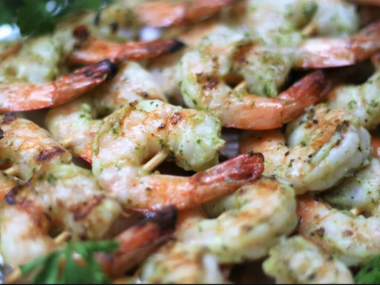

Grilled Garlic Shrimp

Ingredients
- 3 tablespoons olive oil
- 1 tablespoon lemon juice
- 3 cloves garlic, minced
- 1 tablespoon minced fresh parsley
- 1 tablespoon minced fresh basil
- ½ teaspoon garlic salt
- ⅛ teaspoon freshly ground black pepper
- 1 pound extra large shrimp, peeled and deveined
- 6 wooden skewers
Steps
-
Combine oil, lemon juice, garlic cloves, parsley, basil, garlic, salt,
and pepper in the bowl of a food processor. Blend until marinade is smooth,
about 20 seconds.
- Pour marinade into a resealable gallon-sized plastic bag. Add shrimp to the
bag and toss to coat with the marinade. Seal bag and chill in the refrigerator
for 30 minutes.
-
Soak wooden skewers in cold water while shrimp is marinating.
-
Preheat an outdoor grill for high heat and lightly oil the grate.
-
Remove shrimp from marinade and thread onto skewers, 5 to 6 shrimp per skewer.
Cook the shrimp on the preheated grill until they are bright pink on the outside
and no longer transparent in the center, about 3 minutes per side.
Home